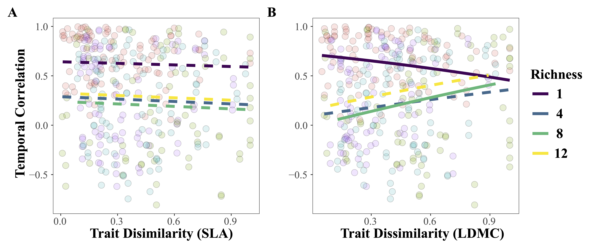
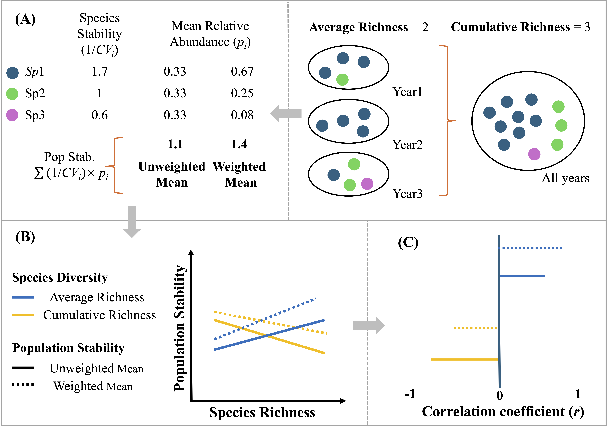
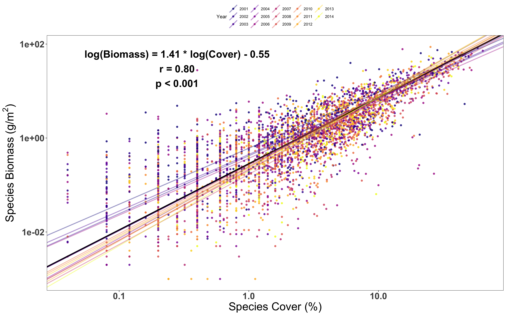

How biodiversity stabilizes productivity under experimental drought
2026 · Preprint
In this study, we examined whether biodiversity stabilizes ecosystem functioning through resistance to drought, recovery afterward, or both, and how functional traits mediate these pathways at the community level in UU BioCliVE. Using fully controlled manipulations of plant diversity and drought, we showed that biodiversity stabilizes ecosystem productivity primarily through resistance, rather than recovery. Structural equation models revealed that this stabilizing effect is mediated by both community trait composition and functional diversity. Communities composed of species with more conservative strategies are more resistant to drought, consistent with the mass-ratio effect, while higher functional diversity further enhances resistance via compensatory dynamics. Together, the results demonstrate that biodiversity effects on ecosystem stability are strongly shaped by functional composition and trait diversity, providing mechanistic insights into how grassland ecosystems may respond to increasing climatic extremes.
How plant traits within and across species contribute to the stabilization of grassland productivity
2026 · Journal of Ecology

In this study, I examined how functional traits measured both within species and across species help explain why some grassland communities remain more stable through time than others. We found that stability is not just about how many species are present but which species, and how they interact. Species with slow strategies tend to be more stable, while fast-growing species fluctuate more. Surprisingly, variation within a species does not necessarily stabilize ecosystems, and can even have the opposite effect in simple systems.
And most interestingly, the mechanisms underlying stability shift with biodiversity gradients. In low-diversity communities, stability is driven more by differences in how species respond to environmental variation. In more diverse communities, species interactions, such as competition, appear to play a stronger role. The work links biodiversity experiments with trait-based ecology and shows that stabilization is not only about how many species are present, but also about the kinds of strategies those species express in changing environments.
How diversity and population stability are linked across global plant communities
2026 · New Phytologist

This paper tested whether discrepancies between experimental and observational studies arise from differences in diversity metrics (average vs cumulative richness) and temporal stability metrics (abundance-weighted vs unweighted species stability). Using data from more than 8000 permanent vegetation plots across biomes on five continents, I show that diversity has a stronger destabilizing effect when stability is calculated using abundance-weighted measures, which are more influenced by dominant species. Similarly, cumulative richness—capturing long-term species turnover—reveals a stronger destabilizing relationship than average annual richness. These results help reconcile contrasting findings in the literature and highlight the importance of species identity and abundance distributions in shaping stability patterns.
How measures of species abundance influence estimates of species diversity and stability
2024 · Journal of Vegetation Science

This paper addresses a fundamental but often overlooked question: how does the measurement of species abundance affect estimates of biodiversity and temporal stability? Species diversity and temporal stability metrics are frequently calculated using either plant cover or biomass, yet these measures are often treated as interchangeable. I demonstrate a convex relationship between species cover and biomass and show that, while species diversity estimated from cover and biomass is strongly correlated, temporal stability derived from total biomass and summed cover is uncorrelated. This highlights the need for greater methodological consistency and caution when comparing temporal stability patterns across studies that use different abundance measures.